22신 · 실제 인게임 권능 사용 화면 실제 SDL 게임 렌더러에서 성공한 권능 직후 저장한 화면입니다. 필드 11×11칸을 확대했으며 원본 전체 화면도 열 수 있습니다. 테스트 전투장·고정 장비·높은 HP/MP/신앙을 사용하며 일반 던전 플레이 영상은 아닙니다.
권능 해금: 1성 신앙 30 / 3성 75 / 5성 120. 자동은 조건을 만족할 때 적용되는 가호, 사용은 직접 고르는 권능입니다. 각 카드 아래에 1·3·5성의 실제 효과와 화면 표시를 구분해 적었습니다. MP/신앙 비용은 선택 장면의 실제 영어 메뉴를 함께 확인하세요.
스이세이 새 1·3·5성 전용 효과 점검 보기
보고 있는 사용 장면1성 · 별자리 표식 · #1 3성 · 궤도 절단 · #2 5성 · 혜성 낙하 · #3 혜성 낙하 고정 3×3에 지연 낙하; 별을 소모해 표적 피해 강화
실제 게임 메뉴: Comet (MP6, piety10) 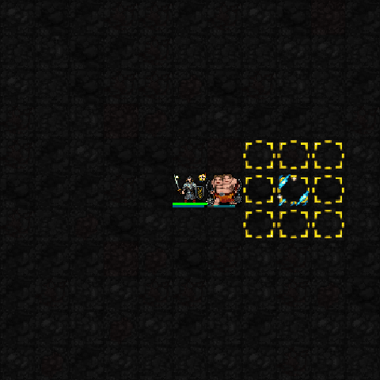
1프레임 2프레임 효과 제거 후 애니메이션
원본 전체 화면 보기 권능 다시 보기 1성 · 별자리 표식 지정·자동 권능 효과: 한 적을 공격해 별 축적; 처치 후 다음 공격 강화
화면 표시: 표적 지정 때 혜성빛 · 별은 전용 자원
3성 · 궤도 절단 사용 권능 효과: 직선 관통 공격; 표적의 별을 소모해 추가 피해
화면 표시: 혜성빛 권능 사용 시 효과
5성 · 혜성 낙하 사용 권능 효과: 고정 3×3에 지연 낙하; 별을 소모해 표적 피해 강화
화면 표시: 노랑→빨강 경고 뒤 혜성 낙하
미코 새 3성 불꽃·5성 신역 전개 보기
보고 있는 사용 장면1성 · 벚꽃 신사 · #4 3성 · 액막이 불꽃 / 벚꽃 결계 · #5 5성 · 신역 전개 · #6 1성 · 벚꽃 신사 · #58 신역 전개 성역 확대·피해 감소·해로운 상태 하나 정화
실제 게임 메뉴: Great sanctuary (MP6, piety10) 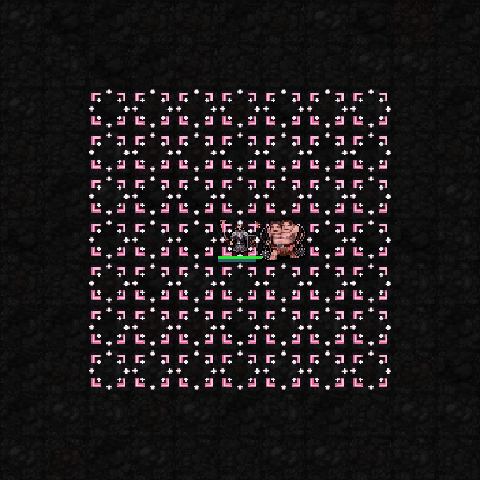
1프레임 2프레임 효과 제거 후 애니메이션
원본 전체 화면 보기 권능 다시 보기 1성 · 벚꽃 신사 사용 권능 효과: 제자리에 회복·상태 방어 성역 설치
화면 표시: 분홍 성역 장판
3성 · 액막이 불꽃 / 벚꽃 결계 사용·자동 권능 효과: 성역 테두리 화염; 외부 원거리 공격 피해 완화
화면 표시: 현재 별도 불꽃 도트 없이 성역 표시 공유
5성 · 신역 전개 사용 권능 효과: 성역 확대·피해 감소·해로운 상태 하나 정화
화면 표시: 넓어진 성역 장판
아키 보고 있는 사용 장면1성 · 장미의 씨앗 · #7 3성 · 가시 장미 · #8 5성 · 붉은 정원의 만개 · #9 붉은 정원의 만개 정원 확대·가시 소모 폭발·장미 공격 강화
실제 게임 메뉴: Full bloom (MP6, piety12) 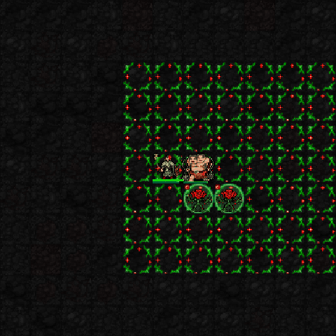
1프레임 2프레임 효과 제거 후 애니메이션
원본 전체 화면 보기 권능 다시 보기 1성 · 장미의 씨앗 사용 권능 효과: 정원 설치; 가시가 쌓인 적의 이동 방해
화면 표시: 초록 정원 장판
3성 · 가시 장미 사용 권능 효과: 정원 안에 원거리 공격 장미 2개 배치
화면 표시: 정원 장판 + 장미 소환물
5성 · 붉은 정원의 만개 사용 권능 효과: 정원 확대·가시 소모 폭발·장미 공격 강화
화면 표시: 확대된 정원 · 정원빛 권능 사용 시 효과
후부키 새 바꿔치기·여우불·순차 등장 연출 보기
보고 있는 사용 장면1성 · 흰 여우의 분신 · #10 3성 · 여우 바꿔치기 · #11 5성 · 백여우 행렬 · #12 백여우 행렬 분신을 최대 4개로 늘려 기만·협공 강화
실제 게임 메뉴: Fox gathering (MP6, piety12) 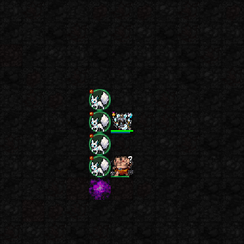
1프레임 2프레임 효과 제거 후 애니메이션
원본 전체 화면 보기 권능 다시 보기 1성 · 흰 여우의 분신 사용 권능 효과: 고정 분신으로 적을 속이고 자신의 공격에 협공
화면 표시: 흰 여우 분신 + 여우불 권능 사용 시 효과
3성 · 여우 바꿔치기 사용 권능 효과: 분신과 자리 교환; 떠난 자리 주변 여우불 공격
화면 표시: 여우 위치 교환 · 여우불 권능 사용 시 효과
5성 · 백여우 행렬 사용 권능 효과: 분신을 최대 4개로 늘려 기만·협공 강화
화면 표시: 여우 분신 여러 개
아야메 보고 있는 사용 장면3성 · 쌍섬 · #13 5성 · 백귀의 결투장 · #14 백귀의 결투장 지정 상대와 결투 강화; 처치 시 MP·재사용 보상
실제 게임 메뉴: Duel (MP5, piety10) 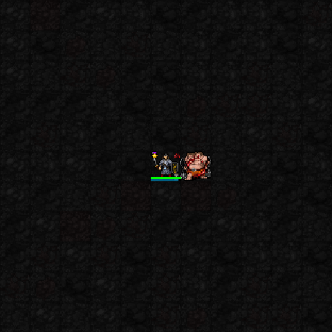
1프레임 2프레임 효과 제거 후 애니메이션
원본 전체 화면 보기 권능 다시 보기 1성 · 귀인의 간격 자동 권능 효과: 같은 적과 근접전을 이어가면 명중·살육·회피 강화
화면 표시: 전용 지속 장판 없음
3성 · 쌍섬 사용 권능 효과: 일반 근접 공격 한 번의 시간으로 두 번 공격
화면 표시: 공통 타격 효과
5성 · 백귀의 결투장 사용 권능 효과: 지정 상대와 결투 강화; 처치 시 MP·재사용 보상
화면 표시: 현재 결투장 경계 전용 도트 없음 · 붉은 쌍검 권능 사용 시 효과
초코 보고 있는 사용 장면1성 · 달콤한 시선 · #15 3성 · 위험한 입맞춤 · #16 5성 · 서큐버스의 밤 · #17 서큐버스의 밤 유혹을 소모해 확률로 적 하나를 잠시 아군화
실제 게임 메뉴: Charm (MP6, piety12) 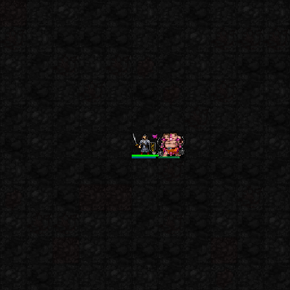
1프레임 2프레임 효과 제거 후 애니메이션
원본 전체 화면 보기 권능 다시 보기 1성 · 달콤한 시선 사용 권능 효과: 유혹 표식; 직접 공격으로 중첩해 대상 약화
화면 표시: 유혹 권능 사용 시 효과 · 표식 전용 도트 없음
3성 · 위험한 입맞춤 사용 권능 효과: 인접 표적의 유혹을 소모해 피해·HP 회복
화면 표시: 공통 타격 효과
5성 · 서큐버스의 밤 사용 권능 효과: 유혹을 소모해 확률로 적 하나를 잠시 아군화
화면 표시: 원래 몬스터의 아군 표시 · 유혹 권능 사용 시 효과
코로네 보고 있는 사용 장면3성 · 놓치지 않아 · #18 5성 · 끝나지 않는 내구전 · #19 끝나지 않는 내구전 추가 주먹·근성 유지; 받은 피해 일부를 나중에 지불
실제 게임 메뉴: Endurance (MP5, piety12) 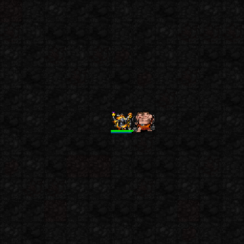
1프레임 2프레임 효과 제거 후 애니메이션
원본 전체 화면 보기 권능 다시 보기 1성 · 꺾이지 않는 근성 자동 권능 효과: 근접 공격·피격으로 근성 축적; 명중·살육 증가
화면 표시: 전용 지속 장판 없음
3성 · 놓치지 않아 사용 권능 효과: 근성 소모 강타; 붙잡은 상대를 추격 가능
화면 표시: 공통 타격 효과
5성 · 끝나지 않는 내구전 사용 권능 효과: 추가 주먹·근성 유지; 받은 피해 일부를 나중에 지불
화면 표시: 연속 주먹 권능 사용 시 효과 · 사냥개는 징벌 전용
오카유 보고 있는 사용 장면3성 · 같이 낮잠 잘래 · #20 5성 · 꿈까지 먹어줄게 · #21 꿈까지 먹어줄게 만복·졸음 소모 강타; 잠든 적에게 강화
실제 게임 메뉴: Dream eater (MP5, piety8) 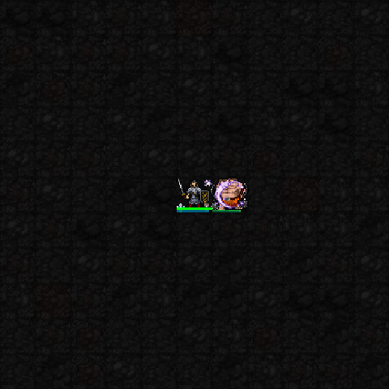
1프레임 2프레임 효과 제거 후 애니메이션
원본 전체 화면 보기 권능 다시 보기 1성 · 모구모구 식사·자동 권능 효과: 음식·직접 처치로 만복 축적; 만복으로 보호막 유지
화면 표시: 일반 식사 처리 · 별도 장판 없음
3성 · 같이 낮잠 잘래 사용 권능 효과: 대상에게 졸음 축적; 감속·수면 판정
화면 표시: 수면 권능 사용 시 효과 + 원래 수면 상태 표시
5성 · 꿈까지 먹어줄게 사용 권능 효과: 만복·졸음 소모 강타; 잠든 적에게 강화
화면 표시: 공통 타격 효과
페코라 보고 있는 사용 장면1성 · 수상한 당근 · #22 3성 · 도화선 조작 · #23 5성 · 페코랜드 개장 · #24 1성 · 수상한 당근 · #60 1성 · 수상한 당근 · #66 페코랜드 개장 구역 안 세 지점을 지정해 순차 폭격
실제 게임 메뉴: Pekoland: select three strikes (MP7, piety14) 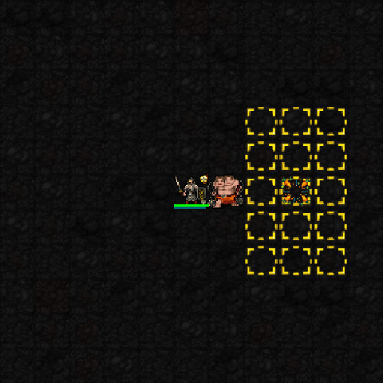
1프레임 2프레임 효과 제거 후 애니메이션
원본 전체 화면 보기 권능 다시 보기 1성 · 수상한 당근 사용 권능 효과: 밟으면 폭발하는 당근 설치; 연쇄 폭발 가능
화면 표시: 당근 폭탄 타일
3성 · 도화선 조작 사용 권능 효과: 설치 폭탄 즉시 기폭 또는 지연 기폭 예약
화면 표시: 예약 폭발 노랑→빨강 경고
5성 · 페코랜드 개장 사용 권능 효과: 구역 안 세 지점을 지정해 순차 폭격
화면 표시: 순차 범위 경고 · 폭발 때 화염 효과
노엘 보고 있는 사용 장면5성 · 백은의 기사단장 · #25 5성 · 백은의 기사단장 · #59 5성 · 백은의 기사단장 · #64 5성 · 백은의 기사단장 · #68 백은의 기사단장 근접 물리 피해·AC·SH 강화
실제 게임 메뉴: Silver commander (MP5, piety10) 1프레임 2프레임 효과 제거 후 애니메이션
원본 전체 화면 보기 권능 다시 보기 1성 · 기사의 기량 사용 권능 효과: 전투·현재 무기/맨손·갑옷·방패 유효 스킬 증가
화면 표시: 발동 시 보호빛 · 일반 활성 아이콘
3성 · 기사단의 보급 자동 권능 효과: 처치로 보급 진척을 쌓아 사용 가능한 장비 선물
화면 표시: 실제 장비 아이템 · 전용 장판 없음
5성 · 백은의 기사단장 사용 권능 효과: 근접 물리 피해·AC·SH 강화
화면 표시: 본인 칸 보호 표시
와타메 보고 있는 사용 장면3성 · 양털 방벽 / 반격박치기 · #26 5성 · 끝나지 않은 노래 · #27 끝나지 않은 노래 양털 재생 강화; 치명상을 한 번 버티고 회복
실제 게임 메뉴: Won't die (MP6, piety15) 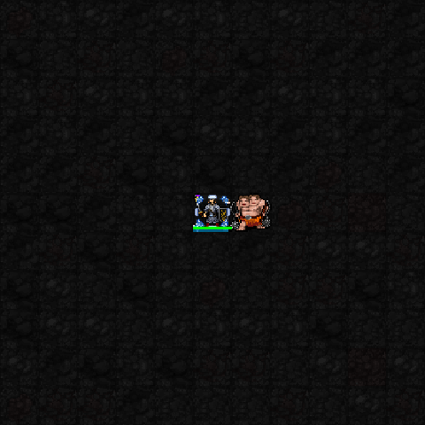
1프레임 2프레임 효과 제거 후 애니메이션
원본 전체 화면 보기 권능 다시 보기 1성 · 포근한 양털 자동 권능 효과: 전투·이동 중에도 추가 HP 재생
화면 표시: 전용 지속 장판 없음
3성 · 양털 방벽 / 반격박치기 사용·자동 권능 효과: 직접 피격 3회 완화; 회피·방패 차단 시 반격 판정
화면 표시: 방벽 유지 중 본인 칸 보호 표시
5성 · 끝나지 않은 노래 사용 권능 효과: 양털 재생 강화; 치명상을 한 번 버티고 회복
화면 표시: 권능 사용 시 보호빛 · 5성 활성 아이콘
토와 보고 있는 사용 장면3성 · 엄호사격 · #28 5성 · 악마의 교차포화 · #29 악마의 교차포화 기존 엄호 구역의 지원사격·화력 강화
실제 게임 메뉴: Crossfire (MP6, piety12) 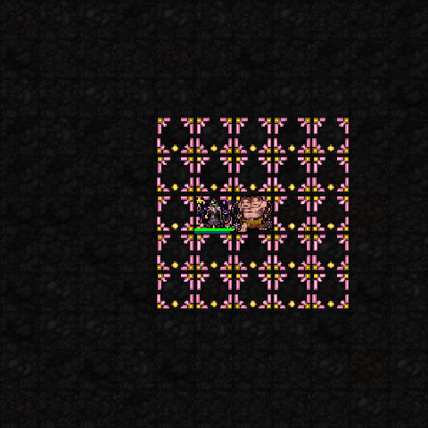
1프레임 2프레임 효과 제거 후 애니메이션
원본 전체 화면 보기 권능 다시 보기 1성 · 악마의 조준 자동 권능 효과: 일반 원거리 공격의 명중·피해 강화
화면 표시: 전용 지속 장판 없음
3성 · 엄호사격 사용 권능 효과: 지정 구역의 적을 사격하면 추가 지원사격
화면 표시: 분홍·금색 엄호 구역 장판
5성 · 악마의 교차포화 사용 권능 효과: 기존 엄호 구역의 지원사격·화력 강화
화면 표시: 엄호 구역 장판 공유
라미 보고 있는 사용 장면1성 · 설국의 잔 · #30 3성 · 서리의 숨결 · #31 5성 · 눈의 연회 · #32 1성 · 설국의 잔 · #65 눈의 연회 취기 소모; 주변 적에게 주기적 냉기 피해·냉각
실제 게임 메뉴: Banquet (MP6, piety12) 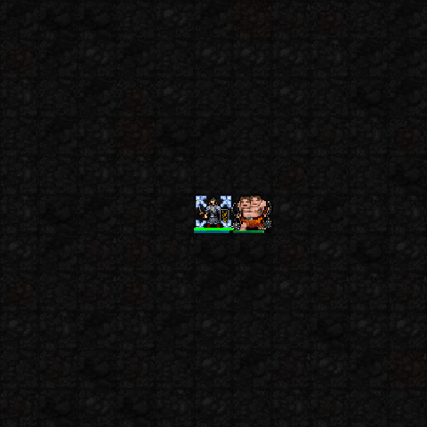
1프레임 2프레임 효과 제거 후 애니메이션
원본 전체 화면 보기 권능 다시 보기 1성 · 설국의 잔 사용 권능 효과: 술로 취기 축적; 적정 취기에서 냉기 공격 보너스
화면 표시: 서리 권능 사용 시 효과
3성 · 서리의 숨결 사용 권능 효과: 전방 부채꼴 냉기 공격·냉각 축적
화면 표시: 서리 권능 사용 시 효과 · 전용 부채꼴 애니메이션 없음
5성 · 눈의 연회 사용 권능 효과: 취기 소모; 주변 적에게 주기적 냉기 피해·냉각
화면 표시: 본인 칸 서리 표시
폴카 보고 있는 사용 장면1성 · 오늘의 공연 · 일점집중 · #33 3성 · 공중곡예 · #34 5성 · 대단원 · 커튼콜 · #35 대단원 · 커튼콜 박수를 소모해 HP를 회복하고 잠시 보호 효과를 얻는다.
실제 게임 메뉴: Curtain call (MP6, piety10) 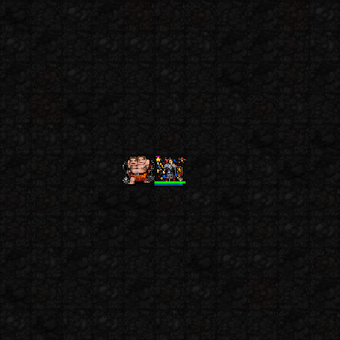
1프레임 2프레임 효과 제거 후 애니메이션
원본 전체 화면 보기 권능 다시 보기 1성 · 오늘의 공연 사용 권능 효과: 일점집중·외줄타기·저글링 과제를 완수해 박수 획득
화면 표시: 서커스 권능 사용 시 효과 · 공연 전용 장판 없음
3성 · 공중곡예 사용 권능 효과: 인접 적을 넘어 도약; 다음 공격 강화
화면 표시: 서커스 권능 사용 시 효과
5성 · 대단원 선택 사용 권능 효과: 박수 소모: 불꽃 피날레 / 커튼콜 회복 / 대혼란
화면 표시: 현재 셋 모두 서커스 권능 사용 시 효과를 공유
코요리 보고 있는 사용 장면1성 · 조수의 실험대 · 독성 시약 제조 · #36 1성 · 조수의 실험대 · 독성 시약 투척 · #37 5성 · 임계 실험 · 연소 · #38 임계 실험 · 연소 다음 연소 반응을 강화하도록 준비한다. 이 사용 장면 자체가 연소 폭발은 아니다.
실제 게임 메뉴: Critical combustion (MP5, piety8) 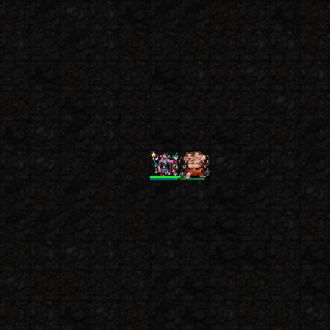
1프레임 2프레임 효과 제거 후 애니메이션
원본 전체 화면 보기 권능 다시 보기 1성 · 조수의 실험대 선택 사용 권능 효과: 독성·발열·냉각 시약 제조 후 투척 또는 무기 도포
화면 표시: 시약 반응 권능 사용 시 효과 · 별도 시약 도트 없음
3성 · 촉매 투입 켜기/끄기 권능 효과: 시약 조합으로 연소폭발·열충격·응고점액 반응
화면 표시: 응고 반응에 초록 점액 장판
5성 · 임계 실험 선택 사용 권능 효과: 다음 연소·점액·열충격 반응 중 하나 강화
화면 표시: 점액은 넓어진 장판 · 나머지는 시약 반응 권능 사용 시 효과
루이 보고 있는 사용 장면1성 · 검은 날개의 권속 · #39 3성 · 사냥 지휘 · #40 5성 · 흑익의 군세 · #41 1성 · 검은 날개의 권속 · #63 5성 · 흑익의 군세 · #69 흑익의 군세 까마귀를 최대 6마리로 늘리고 강화
실제 게임 메뉴: Raven host (MP7, piety14) 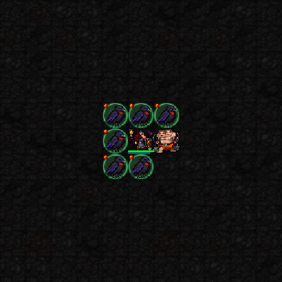
1프레임 2프레임 효과 제거 후 애니메이션
원본 전체 화면 보기 권능 다시 보기 1성 · 검은 날개의 권속 사용 권능 효과: 아군 까마귀를 불러 공격·추격
화면 표시: 까마귀 소환물
3성 · 사냥 지휘 사용 권능 효과: 지정 적에게 까마귀들의 집중 공격 유도
화면 표시: 까마귀 행동 · 까마귀 지휘 권능 사용 시 효과
5성 · 흑익의 군세 사용 권능 효과: 까마귀를 최대 6마리로 늘리고 강화
화면 표시: 강화된 까마귀 무리
라덴 보고 있는 사용 장면1성 · 전시 · 공예품 · #42 3성 · 소장품 발동 · 옻칠의 가호 · #43 5성 · 특별전 개막 · #44 특별전 개막 세 작품의 가호를 함께 받고 각 발동 권능 강화
실제 게임 메뉴: Special exhibition (MP6, piety12) 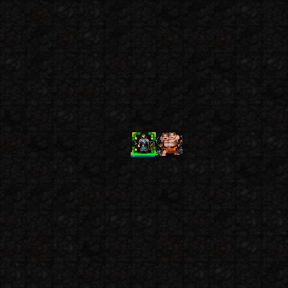
1프레임 2프레임 효과 제거 후 애니메이션
원본 전체 화면 보기 권능 다시 보기 1성 · 이동 박물관 선택 사용 권능 효과: 회화: 공격 / 조각: AC / 공예: 처치 회복 중 전시
화면 표시: 전시 교체 시 초록·금색 효과
3성 · 소장품 발동 선택 사용 권능 효과: 전시 작품에 따라: 채색 폭발 / 조각의 파동 / 옻칠의 가호
화면 표시: 셋 모두 전시 권능 사용 시 효과 공유
5성 · 특별전 개막 사용 권능 효과: 세 작품의 가호를 함께 받고 각 발동 권능 강화
화면 표시: 본인 칸 전시 표시
하지메 보고 있는 사용 장면3성 · 파고들기 · #45 5성 · 반쵸 타임 · #46 5성 · 반쵸 타임 · #62 반쵸 타임 일반 이동 후 도착 지점 주변 1칸의 적을 공격
실제 게임 메뉴: Bancho time (MP6, piety12) 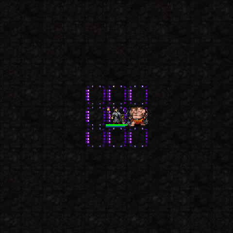
1프레임 2프레임 효과 제거 후 애니메이션
원본 전체 화면 보기 권능 다시 보기 1성 · 반쵸의 스텝 자동 권능 효과: 적 근처 이동으로 박자 축적; 다음 근접 공격 강화
화면 표시: 전용 지속 장판 없음
3성 · 파고들기 사용 권능 효과: 적 옆으로 이동하며 박자를 소모해 타격
화면 표시: 리듬 권능 사용 시 효과
5성 · 반쵸 타임 사용 권능 효과: 일반 이동 후 도착 지점 주변 1칸의 적을 공격
화면 표시: 본인을 따라오는 보라 리듬 테두리
스우 보고 있는 사용 장면3성 · 밀려오는 파도 · #47 5성 · 만조 · #48 만조 이동을 따라오는 물 구역; 주기적 파동·파도 강화
실제 게임 메뉴: High tide (MP6, piety12) 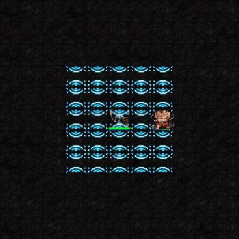
1프레임 2프레임 효과 제거 후 애니메이션
원본 전체 화면 보기 권능 다시 보기 1성 · 물결의 흔적 자동 권능 효과: 직접 공격한 적 발밑에 이동을 방해하는 웅덩이
화면 표시: 적 발밑 물결 한 칸
3성 · 밀려오는 파도 사용 권능 효과: 직선 수압 공격·밀침; 웅덩이를 지나면 폭 확대
화면 표시: 물결 권능 사용 시 효과
5성 · 만조 사용 권능 효과: 이동을 따라오는 물 구역; 주기적 파동·파도 강화
화면 표시: 본인 주변 5×5 물 장판
비비 보고 있는 사용 장면1성 · 전투 메이크업 · #49 3성 · 눈부신 등장 · #50 5성 · 런웨이의 주인공 · #51 런웨이의 주인공 적의 주목을 모아 공격 강화·등장 범위 확대
실제 게임 메뉴: Runway (MP6, piety12) 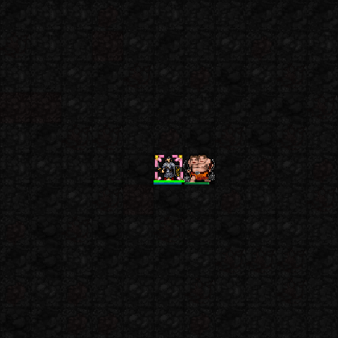
1프레임 2프레임 효과 제거 후 애니메이션
원본 전체 화면 보기 권능 다시 보기 1성 · 전투 메이크업 사용 권능 효과: 직접 공격 피해 강화; 은신·투명 유지에는 불리
화면 표시: 분홍 스포트라이트 권능 사용 시 효과
3성 · 눈부신 등장 사용 권능 효과: 주변 적에 마법 피해·실명 판정
화면 표시: 권능 사용 시 스포트라이트 + 원래 실명 상태
5성 · 런웨이의 주인공 사용 권능 효과: 적의 주목을 모아 공격 강화·등장 범위 확대
화면 표시: 본인 칸 스포트라이트 표시
소피아 보고 있는 사용 장면1성 · 행성의 고리 · #52 3성 · 중력장 · #53 5성 · 빅뱅 실험 · #54 추가 사용 · 빅뱅 · 수동 기폭 · #55 1성 · 행성의 고리 · #61 5성 · 빅뱅 실험 · #67 빅뱅 실험 중력장을 확대·응축한 뒤 별도 기폭으로 폭발·밀침
실제 게임 메뉴: Big Bang (MP7, piety14) 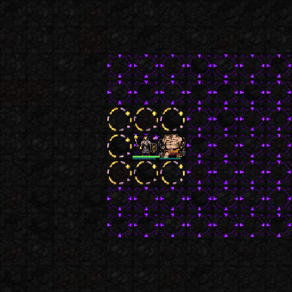
1프레임 2프레임 효과 제거 후 애니메이션
원본 전체 화면 보기 권능 다시 보기 1성 · 행성의 고리 사용 권능 효과: 자신 인접 8칸의 적에게 주기적 물리 피해
화면 표시: 본인을 따라오는 금색 고리
3성 · 중력장 사용 권능 효과: 고정 구역의 적에게 지속 피해·중심 끌기 판정
화면 표시: 고정 보라 중력장
5성 · 빅뱅 실험 사용·기폭 권능 효과: 중력장을 확대·응축한 뒤 별도 기폭으로 폭발·밀침
화면 표시: 확대된 중력장 · 기폭 전용 새 도트 없음
메라 보고 있는 사용 장면3성 · 화염 역분사 · #56 5성 · 메라조 출동! · #57 메라조 출동! 열기 충전·화염 보호·자동 소화·역분사 강화
실제 게임 메뉴: Fire brigade (MP6, piety12) 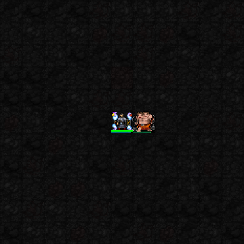
1프레임 2프레임 효과 제거 후 애니메이션
원본 전체 화면 보기 권능 다시 보기 1성 · 불조심의 가호 자동·설정 권능 효과: rF+·피격으로 열기 축적; 열기로 불씨 반격
화면 표시: 반격 켜기/끄기 가능 · 별도 장판 없음
3성 · 화염 역분사 사용 권능 효과: 열기를 소모해 전방 화염 공격·일반 불구름 소화
화면 표시: 청록·보라 도깨비불 권능 사용 시 효과
5성 · 메라조 출동! 사용 권능 효과: 열기 충전·화염 보호·자동 소화·역분사 강화
화면 표시: 본인 칸 도깨비불 표시